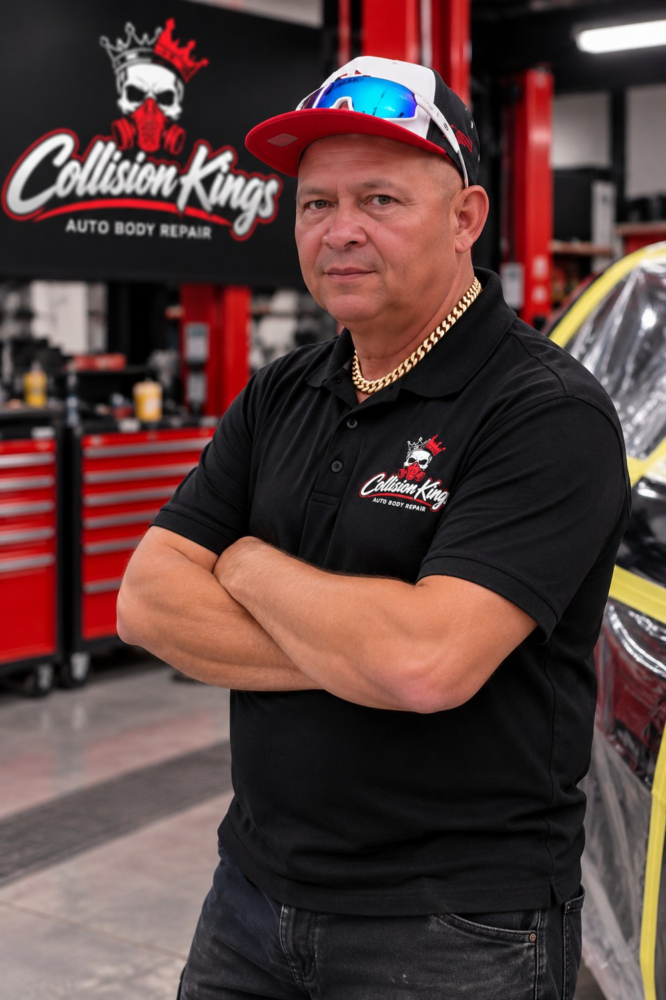
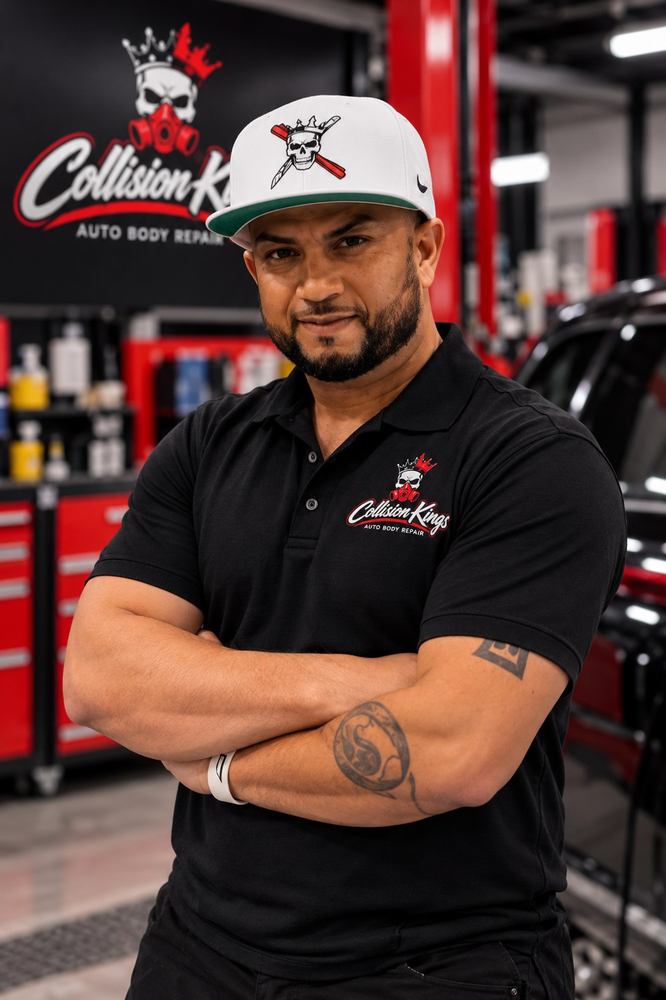
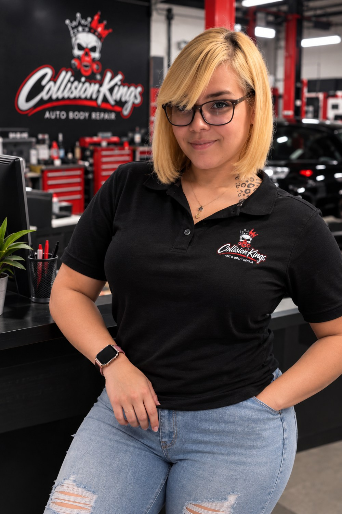
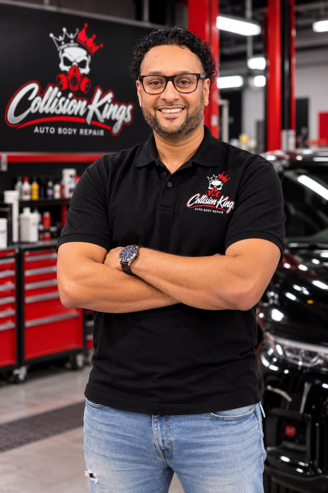
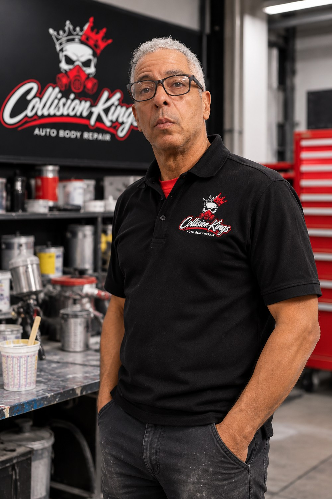
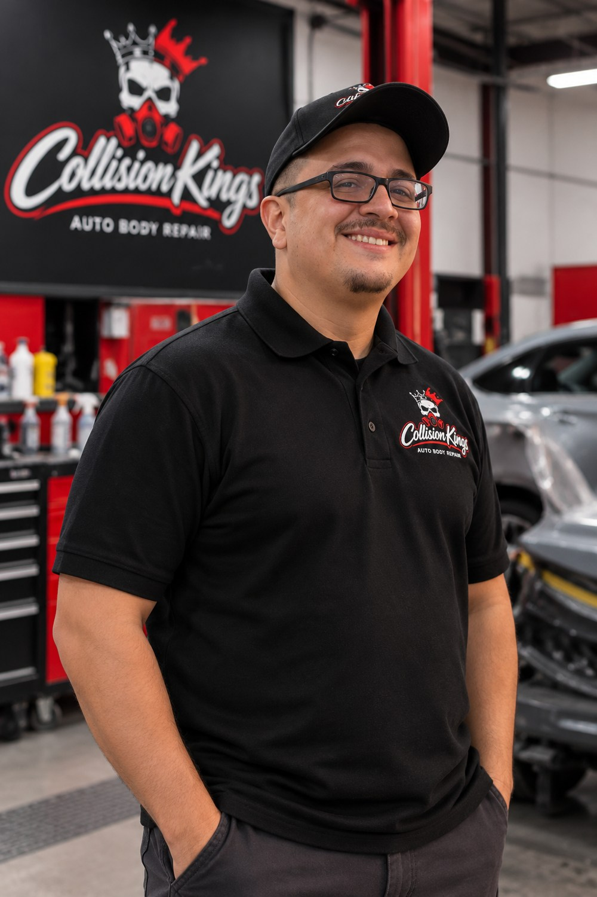
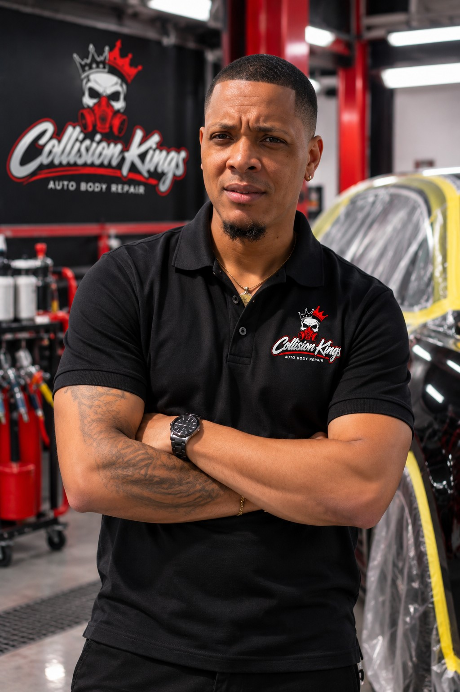

Tomas
Bodyman
Get to know the team at Collision Kings of USA Corp. Dedicated people, professional work, and personal service.

Bodyman

Owner / Operator · Estimator

Secretary

Owner / Operator

Painter

Manager

Painter